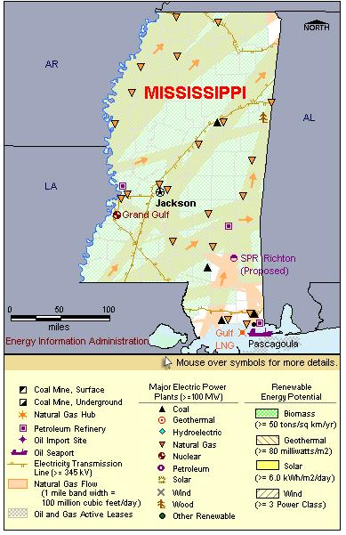

State Overview
There is one operating nuclear power plant in Mississippi:
Grand Gulf in Claiborne County
- Grand Gulf is the fifth largest licensed reactor in the United States.
- Grand Gulf is the largest boiling water reactor in the U.S. fleet.
- The containment type of the Grand Gulf reactor is Mark 3. Additional information on the Mark 3 (and its differences from Mark 1 and Mark 2) is available from the Nuclear Regulatory Commission.
- In October 2003, Entergy filed an Early Site Permit (ESP) for an ESBWR reactor at Grand Gulf. The ESP was issued on April 5, 2007.
Contribution of Nuclear Power
Grand Gulf represents a little less than 10% of Mississippi's capacity, placing nuclear power third behind natural gas and coal.
Grand Gulf's generation accounts for almost 20% of the State's total generation.
Mississippi is a net importer of electric power energy, importing 8% of its electric power use.
License Renewals
- Grand Gulf: On September 30, 2008, Entergy notified the NRC that it planned to prepare a license renewal application for Grand Gulf, whose original operating license will expire in November 2024.
New Applications
- Grand Gulf: On April 5, 2007, the NRC issued an Early Site Permit for possible expansion of the Grand Gulf site.
- Grand Gulf: On February 27, 2008, a Combined License (COL) application was submitted for a new unit at the Grand Gulf plant. The application is for an Economic Simplified Boiling Water Reactor (ESBWR).

|
| Mississippi Total Electric Power Industry, Summer Capacity and Net Generation, by Energy Source, 2008 |
| Primary Energy Source |
Summer Capacity
(MW) |
Share of State Total
(Percent) |
Net Generation
(Thousand MWh) |
Share of State Total
(Percent) |
| Nuclear |
1,259 |
7.9 |
9,397 |
19.5 |
| Coal |
2,555 |
16.0 |
16,683 |
34.6 |
| Natural Gas |
11,859 |
74.4 |
20,607 |
42.7 |
| Other1 |
4 |
* |
50 |
0.1 |
| Other Renewable1 |
229 |
1.4 |
1,391 |
2.9 |
| Petroleum |
36 |
0.2 |
76 |
0.2 |
| Total |
15,942 |
100.0 |
48,206 |
100.0 |
| Mississippi Nuclear Power Plants, Summer Capacity and Net Generation, 2008 |
| Plant Name/Total Reactors |
Summer Capacity
(MW) |
Net Generation
(Thousand MWh) |
Share of State Nuclear
Net Generation
(Percent) |
Owner |
Grand Gulf
Unit 1 |
1,259 |
9,397 |
100.0 |
System Energy Resources, Inc |
1 Plant
1 Reactor |
1,259 |
9,397 |
100.0 |
|
Plant Profiles
Grand Gulf Nuclear Station
| Grand Gulf |
| Unit |
Summer Capacity
(MW) |
Net Generation
(Thousand MWh) |
Summer Capacity Factor
(Percent) |
Type |
Commercial Operation Date |
License Expiration Date |
| 1 |
1,259 |
9,397 |
85.2 |
BWR |
7/1/1985 |
11/1/2024 |
| |
1,259 |
9,397 |
85.2 |
|
|
|
Operator: System Energy Resources, Inc.
Location and Service Territory: The Grand Gulf nuclear station lies on a 2,100-acre site near Vicksburg.
Construction Cost: $6.325 billion (2007 USD)
Staffing: Grand Gulf has over 700 employees.
Reactor Description: The nuclear generating unit is a General Electric Type 6 boiling water reactor.
Cooling System: The plant has a 520-foot high natural draft cooling tower that discharges water to the Mississippi River.
see also:
more annual nuclear statistics
projected electricity capacity to 2035
international
electricity statistics
|
|